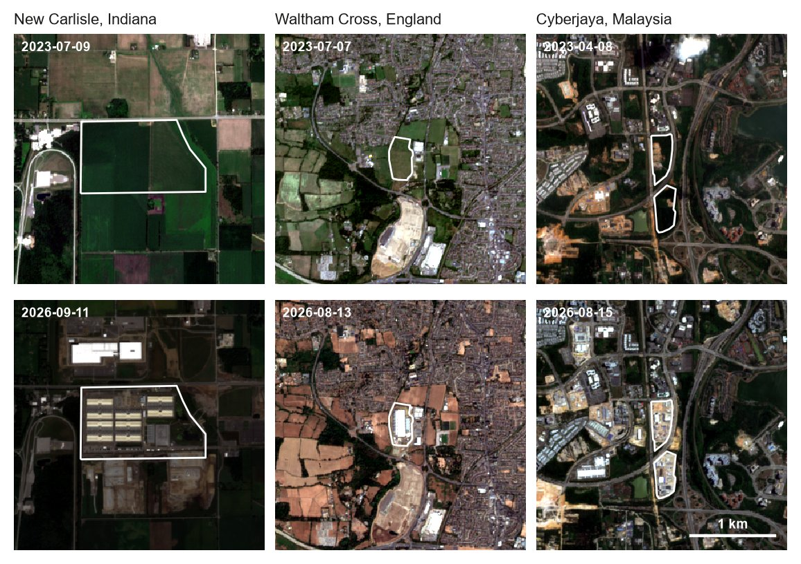
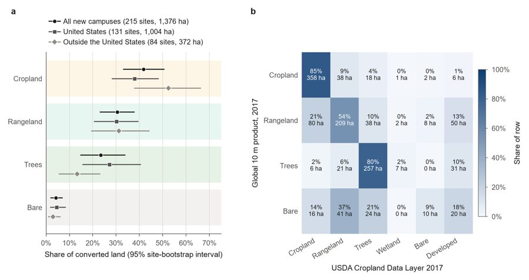
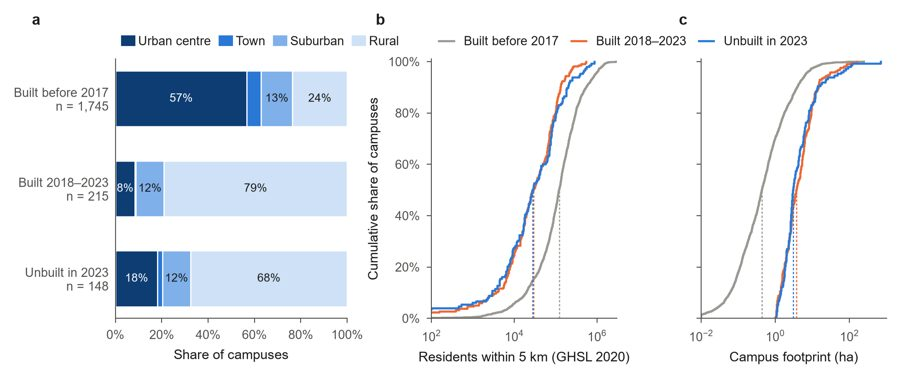
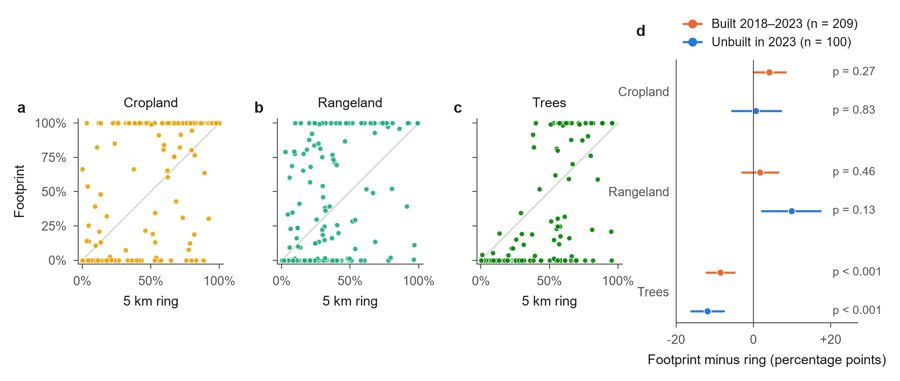
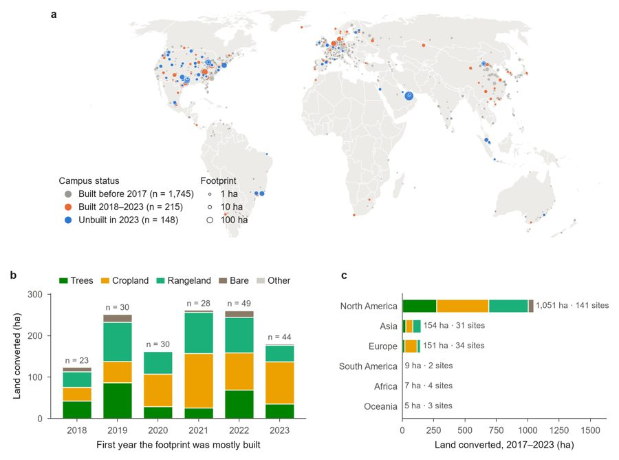

Every mapped campus
Circle size follows footprint area. Zoom in to see campus outlines; click a campus for its land history. Basemap © OpenStreetMap contributors.
Fields in 2023, campuses in 2026

What the analysis found

Cropland is the largest single source
Of the 1,376 ha converted, 42% was cropland, 31% grass and shrub, 23% trees. North America accounts for three quarters. At US campuses, the global land cover map and the USDA crop map agree on the cropland share within three points.

Campuses have left the city
Before 2017, 57% of campuses were in urban centres. Since then, 79% have gone to rural land. The median new campus is 8.4 times larger, with 29,000 people living within 5 km instead of 122,000.

The region decides, not the parcel
New footprints hold no more cropland than the undeveloped land within 5 km (+4 points, 95% CI −0.2 to +8.5), and less forest. Protecting farmland is a regional siting question; steering a campus to another field would change little.

The public record is thin
Most of Canada's 159 proposed hyperscale facilities are planned for Alberta, yet OpenStreetMap shows five Alberta data centers, none of them recent. No country publishes a register of campus footprints.
Limits
- OpenStreetMap covers the US and western Europe well and China, India, Africa and South America poorly. Totals are for mapped campuses only.
- Footprints are drawn by volunteers; some outline buildings, others whole parcels.
- Annual 10 m land cover ends in 2023. After that, Sentinel-2 shows that land changed, not what it became.
- Power plants, substations and transmission lines built for data centers are not counted, so these figures are a lower bound.
Cite
Zeng, Y. (2026). Data center expansion has moved onto rural land: a global footprint analysis, 2017–2026 (code and campus dataset). Zenodo. https://doi.org/10.5281/zenodo.24331630
The campus dataset is derived from OpenStreetMap and released under the ODbL. Code is MIT. Land cover: Esri / Impact Observatory. Population and settlement: GHSL, European Commission JRC.